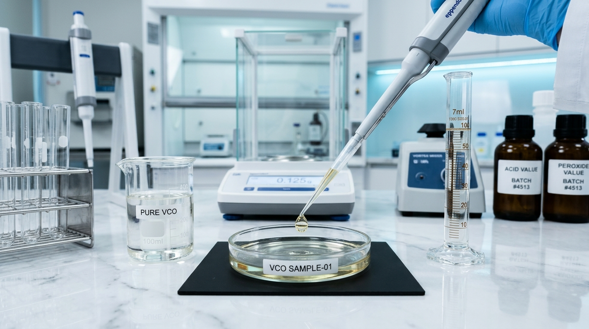
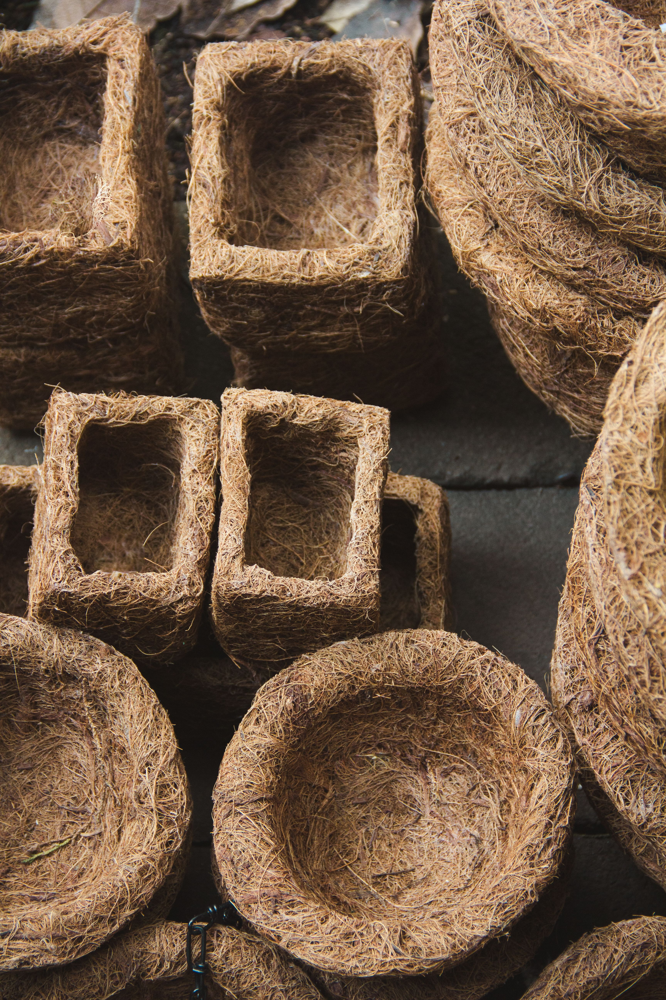

Confidence begins with clear information.
Give customers and business buyers access to product specifications, quality practices and valid supporting documents.
Document what matters.
Explain the checks actually performed at each stage, from raw material receipt through processing, packaging and dispatch.
- Raw material inspection
- Hygiene and process controls
- Product-specific chemical analysis
- Microbiological testing where relevant
- Batch identification and traceability
- Packaging and storage checks

Documents buyers may request
Transparent verification across our entire coconut portfolio — from edible virgin oils to zero-waste horticultural fiber products. Commercial consignments are accompanied by verified compliance dossiers and technical test reports.
Certificate of Analysis (CoA) & Batch Reports
Lot-specific chemical assays: free fatty acids (<0.06%), moisture (<0.04%), peroxide value, and gas chromatography fatty acid fingerprints (GLC).
Phytosanitary & Export Plant Quarantine
Official NPPO / IPPC inspection clearances and thermal heat-treatment certificates ensuring zero quarantine pests and weed seeds for international customs clearance.
Technical Data Sheets (TDS) & Material Specs
Complete physical parameters: appearance, specific gravity, electrical conductivity (EC), fiber tensile density, moisture thresholds, and packaging dimensions.
Food Safety, Licenses & Safety Data (MSDS/SDS)
FSSAI, ISO 22000, HACCP facility audit records, Non-GMO declarations, allergen statements, and GHS-compliant material safety data sheets for handling.
Certificate of Origin & Chain of Custody
Authorized Chamber of Commerce Certificate of Origin (COO), GPS single-estate harvest traceability logs, Non-GMO project statements, and Halal & Kosher conformity declarations.

Featured Case: Eco Coir PotsBiodegradable Coir Nursery Pots
Molded Horticultural Fiber • Documentation Package
Manufactured from 100% natural coconut husk coir fibers. Commercial nurseries, retail garden chains, and international importers receive this verified compliance dossier:
Analytical Purity Benchmark Console & 4-Gate Quality Protocol
Every commercial batch of cold-pressed virgin coconut oil is tested against international Asian and Pacific Coconut Community (APCC) and Codex Alimentarius standards.
Chemical & Physicochemical Purity Assays
Fatty Acid Chromatography Fingerprint (GLC)
Shell integrity, specific gravity, sound acoustics and kernel thickness testing on every truck delivery.
Continuous sensor logging ensuring cold centrifugation chamber temperature never exceeds 45°C.
Third-party testing for total plate count, yeast, mold, coliforms, and lead/arsenic heavy metals.
Lot retention samples stored in climate-controlled conditions for the entire 24-month shelf life.